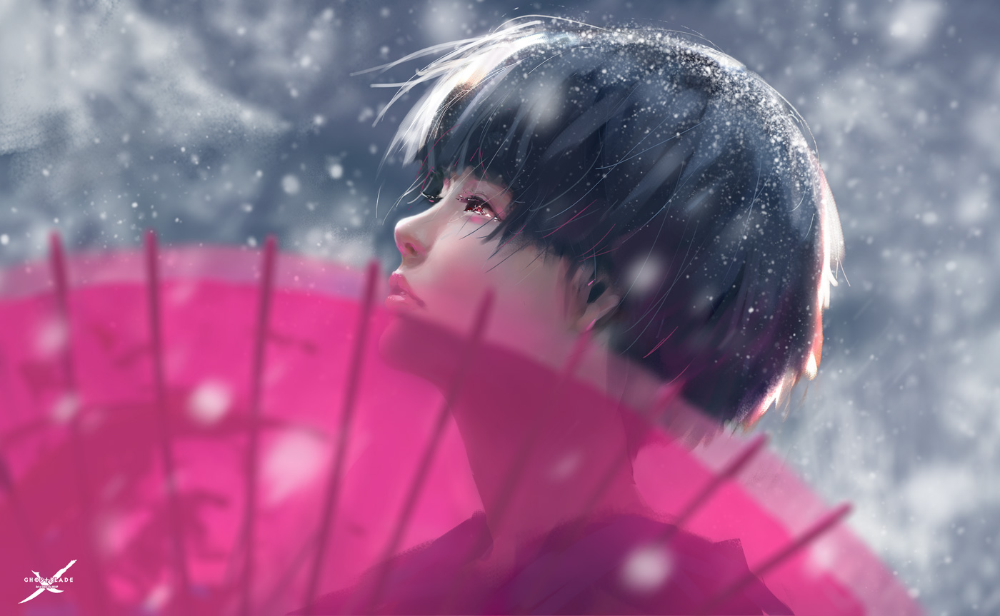
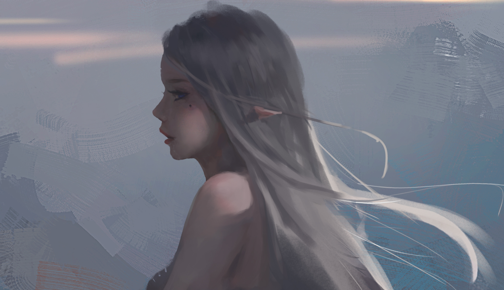

夺命十三枪
第六枪 白龙！
有过痛苦方知众生痛苦 有过牵挂 了无牵挂 若是修佛先修心，一枪风雪一枪冰。


第一枪
相思！
长相思兮长沙忆，短相思兮无穷极
第二枪
断肠！
相思一夜情多少，地角天涯未是长


第四枪
风流！
书香百味有多少，天下何人陪白衣。
相信未来
当我的鲜花依偎在别人的情怀， 我依然固执地用凝霜的枯藤， 在凄凉的大地上写下：相信未来。 我要用手指那涌向天边的排浪， 我要用手掌 那托起太阳的大海， 摇曳着曙光那支温暖漂亮的笔杆， 用孩子的笔体写下：相信未来。
believe future
我之所以坚定地相信未来， 是我相信未来人们的眼睛—— 她有拨开历史风尘的睫毛， 她有看透岁月篇章的瞳孔。
believe future
不管人们对于我们腐烂的皮肉， 那些迷途的惆怅，失败的苦痛， 是寄予感动的热泪，深切的同情， 还是给以轻蔑的微笑，辛辣的嘲讽。
believe future
我坚信人们对于我们的脊骨， 那无数次地探索、迷途、失败和成功， 一定会给予热情、客观、公正的评定， 是的，我焦急地等待着他们的评定。
believe future
朋友，坚定地相信未来吧， 相信不屈不挠的努力， 相信战胜死亡的年轻， 相信未来，热爱生命。
believe future
当蜘蛛网无情地查封了我的炉台， 当灰烬的余烟叹息着贫困的悲哀， 我依然固执地铺平失望的灰烬， 用美丽的雪花写下：相信未来。 当我的紫葡萄化为深秋的露水，
believe future
当我的鲜花依偎在别人的情怀， 我依然固执地用凝霜的枯藤， 在凄凉的大地上写下：相信未来。 我要用手指那涌向天边的排浪， 我要用手掌 那托起太阳的大海， 摇曳着曙光那支温暖漂亮的笔杆， 用孩子的笔体写下：相信未来。